1
EXTRAÑOS COMIENZOS
Pueblos prehistóricos y primitivos; América antigua
No sabemos cómo empezó el arte, del mismo modo que ignoramos cuál fue el comienzo del lenguaje. Si tomamos la palabra arte para significar actividades como construir templos y casas, realizar pinturas y esculturas o trazar esquemas, no existe pueblo alguno en el globo que carezca de arte. Si, por otra parte, entendemos por arte una especie de lujosa belleza, algo que puede gozarse en los museos y en las exposiciones, o determinada cosa especial que sirva como preciada decoración en la sala de mayor realce, tendremos que advertir entonces que este empleo de la palabra corresponde a una evolución muy reciente y que muchos de los mayores arquitectos, pintores y escultores del pasado jamás pensaron en ella. Podemos comprender mejor esta diferencia si nos fijamos en la arquitectura. Todos sabemos que existen hermosos edificios y que algunos de ellos son verdaderas obras de arte; pero rara es, en todo el mundo, la construcción que no haya sido erigida con algún fin determinado. Los que emplean estos edificios como lugares de culto, esparcimiento o vivienda, los juzgan ante todo y principalmente según un criterio de utilidad. Pero aparte de esto, puede gustarles o no el diseño, la proporción de su estructura, y apreciar los esfuerzos del buen arquitecto para construirlos, no sólo de manera práctica, sino correcta. En el pasado, la actitud respecto a los cuadros y a las estatuas fue, con frecuencia, análoga. No eran concebidos como simples obras de arte, sino como objetos que poseían una función definida. Estaría pobremente dotado para juzgar la arquitectura quien ignorara los requerimientos a que obedecía su construcción. Análogamente, no somos aptos para comprender el arte de otro tiempo si ignoramos por completo los fines a que sirvió. Cuanto más retrocedemos en la historia, más definidos, pero también más extraños, son esos fines a los cuales se suponía que el arte tenía que servir. Y lo mismo sucede actualmente si dejamos las villas y ciudades y nos dirigimos al campo, o, mejor aún, si abandonamos nuestros países civilizados para viajar por aquellos otros cuyos modos de vida conservan todavía semejanza con las condiciones en las cuales vivieron nuestros remotos antepasados. Llamamos primitivos a esos pueblos, no porque sean más simples que nosotros —los procesos de su pensamiento son a menudo más complejos—, sino porque se hallan mucho más próximos al estado del cual emergió un día la humanidad. Entre esos primitivos no existe diferencia entre construcción útil y creación de imagen, en cuanto a la necesidad concierne. Sus chozas están allí para resguardarles de la lluvia, el viento, el sol, y también de los espíritus que los producen; las imágenes están hechas para protegerles contra otras fuerzas que son, en su concepto, tan reales como las de la naturaleza. Pinturas y estatuas —en otras palabras— son empleadas con fines mágicos.
No podemos esperar comprender esos extraños comienzos del arte a menos que tratemos de introducirnos en el espíritu de los pueblos primitivos y descubrir qué clase de experiencia es la que les hizo imaginar las pinturas, no como algo agradable de contemplar, sino como objetos de poderoso empleo. No creo que sea tan difícil asimilar este modo de sentir. Lo único que se requiere es la voluntad de ser absolutamente honrados con nosotros mismos y preguntarnos al propio tiempo si no seguimos conservando también algo de primitivos en nuestra existencia. En lugar de comenzar por la época glaciar, empecemos con nosotros mismos. Supongamos que tomamos un retrato de nuestro jugador de fútbol favorito o de la estrella de cine que preferimos, publicado en un periódico del día. ¿Disfrutaríamos pinchándoles los ojos con una aguja?, ¿nos sentiríamos tan indiferentes como si hiciéramos un agujero en otro lugar cualquiera del papel? Creo que no. A pesar de saber muy bien, con plena conciencia, que lo que hagamos en esos retratos no perjudica en nada a los representados, experimentamos un vago reparo en herir su imagen. De alguna manera sigue existiendo en mí el absurdo sentimiento de que lo que se hace en un retrato se hace también sobre la persona que representa. Ahora bien, si no estoy equivocado, si esta extraña e irrazonable idea sobreviene realmente incluso entre nosotros, en la era atómica, es bastante menos sorprendente que nociones semejantes existan en la casi totalidad de los pueblos llamados primitivos. En todas partes del mundo los médicos o hechiceros han tratado de operar mágicamente en análogo sentido; han realizado pequeñas imágenes de un ser odiado y han punzado el corazón del pobre muñeco, o lo han quemado, esperando hacer padecer al enemigo. Incluso el guy quemado el día de Guy Fawkes es un residuo de semejante superstición. En ocasiones, los pueblos primitivos aún dudan acerca de lo que es real y lo que es una pintura. En una ocasión, al dibujar sus animales un artista europeo, los nativos se alarmaron: «Si usted se los lleva consigo, ¿cómo viviremos nosotros?»
Todas estas extrañas ideas son importantes porque pueden ayudarnos a comprender las más antiguas pinturas que han llegado hasta nosotros. Esas pinturas son tan viejas como cualquier otro rastro de obra humana. Y sin embargo, al ser descubiertas en las paredes de cuevas y rocas en España (ilustración 19) y al sur de Francia (ilustración 20) en el siglo XIX, en un principio los arqueólogos no podían creer que aquellas representaciones de animales tan vívidas y naturales hubieran sido hechas por hombres del período Glaciar. Poco a poco, las rudas herramientas de piedra y hueso que se hallaron en estas regiones fueron dejando en claro que aquellas pinturas de bisontes, mamuts y renos sí habían sido pintadas por hombres que cazaban a estos animales y que por eso los conocían tan bien. Es una experiencia extraña descender a estas cuevas, pasando a veces por pasadizos bajos y estrechos, siendo necesario adentrarse en la oscuridad de la montaña, para ver de pronto la linterna eléctrica del guía iluminar la pintura de un toro. Una cosa está clara, nadie se arrastraría hasta las pavorosas profundidades de la montaña solamente para decorar un lugar tan inaccesible. Más aún, pocas de estas pinturas se distribuyen con claridad por los techos o las paredes de la cueva excepto algunas pinturas de la cueva de Lascaux (ilustración 21). Por el contrario, están colocadas allí confusamente, una encima de la otra y sin orden o designio aparente. Es verosímil que sean vestigios de aquella creencia universal en el poder de la creación de imágenes; en otras palabras, esos cazadores primitivos creían que con sólo pintar a sus presas —haciéndolo tal vez con sus lanzas o sus hachas de piedra— los animales verdaderos sucumbirían también a su poder.
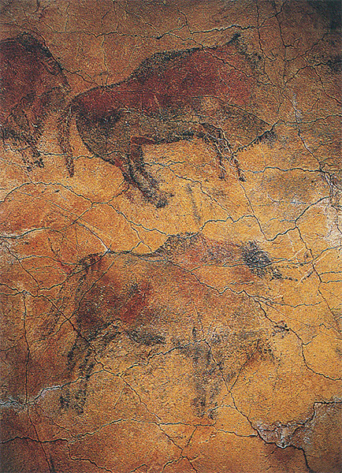
19 Bisonte, h.15000-10000 a.C. Pintura rupestre; Altamira, España.

20 Caballo, h. 15000-10000 a.C. Pintura rupestre; Lascaux, Francia.
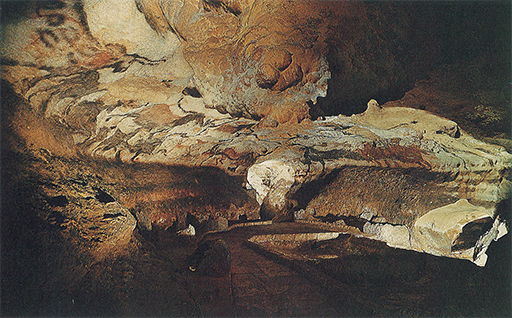
21 Cueva de Lascaux, Francia, h. 15000-10000 a.C.
Naturalmente, esto es una mera conjetura, pero encuentra su mejor apoyo en el empleo del arte entre los pueblos primitivos de nuestros días que han conservado aún sus antiguas costumbres. Bien es verdad que no encontramos ninguno ahora —al menos en lo que a mí se me alcanza— que trate de operar exactamente según esta clase de magia; pero la mayor parte de su arte se halla íntimamente ligada a ideas análogas acerca del poder de las imágenes. Aún existen pueblos primitivos que no utilizan más que herramientas de piedra y que graban representaciones de animales sobre las rocas con fines mágicos. Existen otras tribus que celebran regularmente festivales en los que sus componentes se disfrazan de animales e imitan los movimientos de éstos en danzas solemnes. Ellos también creen que esto ha de darles, de algún modo, poder sobre sus presas; a veces imaginan que ciertos animales se hallan emparentados con ellos de manera semejante a la de los cuentos de hadas, y que toda la tribu es una tribu de lobos, de cuervos o de ranas. Parece bastante extraño, pero no tenemos que olvidar que incluso esas ideas no han desaparecido de nuestra propia época tanto como pudiera creerse. Los romanos creían que Rómulo y Remo habían sido amamantados por una loba, y poseían una imagen de bronce representándola, en el Capitolio de Roma. Aun en nuestros días, bajo Mussolini, tuvieron siempre una loba viva dentro de una jaula cerca de las escalinatas del Capitolio. No se conservan leones vivos en Trafalgar Square, pero el león británico todavía se muestra lleno de vida en las páginas de Punch. Naturalmente, existe una gran diferencia entre esta clase de símbolos heráldicos y caricaturescos y la profunda seriedad con que los salvajes observan sus relaciones con el tótem —como ellos denominan a sus animales familiares—, pues parece que, en ocasiones, viven en una especie de mundo imaginario en el cual pueden ser hombres y bestias al propio tiempo. Muchas tribus celebran ceremonias especiales en las cuales ostentan máscaras con rasgos de esos animales, que, una vez que les cubren, les lleva a sentir que se han transformado, que se han convertido en cuervos o en osos. Es algo semejante a cuando los niños juegan a ser piratas o detectives, llegando un momento en que no saben cuándo termina el juego y comienza la realidad. Pero junto a los niños siempre se halla el mundo de los adultos, el de las personas que dicen: «No hay que hacer tanto ruido», o «Es hora de acostarse». Para el salvaje no existe ese otro mundo que le arrebate la ilusión, porque todos los miembros de la tribu toman parte en los ritos y danzas ceremoniales con sus fantásticos juegos de ficción. Han aprendido su significado desde muy antiguas generaciones, y se hallan tan absorbidos por ellos que poseen muy pocas posibilidades de situarse fuera y contemplar críticamente su conducta. Todos tenemos creencias que presuponemos, tanto como los primitivos las suyas, hasta tal punto que no lo advertimos sino cuando nos encontramos con gentes que las cuestionan.
Todo esto parece tener poco que ver con el arte, pero el hecho es que lo condiciona en varios aspectos. Muchas obras artísticas se han propuesto intervenir en estas extrañas costumbres; de lo que se trata, entonces, no es de si la pintura o la escultura es bella para nuestro criterio, sino de si opera, es decir, si puede ejecutar la magia requerida. Además, el artista trabaja para gentes de su propia tribu, que conocen exactamente lo que cada forma y cada color se proponen significar. No se espera de ellos que inventen o cambien elementos de su medio, sino tan sólo que apliquen toda su destreza y su saber a la ejecución de sus obras.
Por otra parte, no tenemos que ir tan lejos para establecer paralelismos. El objeto de una bandera nacional no consiste en ser un trozo de tela bellamente coloreada, que cualquier fabricante pueda alterar según su fantasía. El objeto de un anillo de boda no reside en constituir un adorno que pueda emplearse o fabricarse según nuestro antojo. Pero, aun dentro de lo que prescriben los ritos y costumbres de nuestras vidas, sigue existiendo un cierto elemento de elección y de campo libre para que se manifiesten el gusto y la habilidad personales. Pensemos en el árbol de navidad. Sus accesorios principales han sido moldeados por la costumbre. Cada familia, en efecto, posee sus propias tradiciones y sus predilecciones propias, sin las cuales el árbol carecería de objeto. Sin embargo, cuando llega el gran momento de adornarlo, queda mucho por decidir. ¿Puede recibir esta rama una velita? ¿Hay bastante oropel en lo alto? ¿No es demasiado pesada esta estrella, o este lado se sobrecarga en exceso? A un forastero, el conjunto del adorno quizá le resulte un tanto extraño. Puede pensar que los árboles son mucho más bonitos sin oropel. Pero para nosotros, que conocemos su significado, se convierte en asunto de gran importancia decorar el árbol de acuerdo con nuestro plan.
El arte primitivo se realiza precisamente de conformidad con semejantes líneas preestablecidas, y, con todo, deja al artista campo de acción para que muestre su ingenio. La maestría técnica de algunos artesanos nativos es realmente sorprendente. No debemos olvidar nunca que, al hablar de arte primitivo, el término no implica que los artistas sólo posean un conocimiento primitivo de su arte. Por el contrario, muchas tribus han desarrollado una habilidad verdaderamente asombrosa en la talla, los trabajos de cestería, la preparación de cuero o, incluso, en la forja de metales. Si comprobamos la simplicidad de los utensilios con que han sido realizadas esas obras, no podremos sino maravillarnos de la paciencia y la seguridad de toque adquiridos por esos artesanos primitivos a través de siglos de especialización. Los maoríes de Nueva Zelanda, por ejemplo, han aprendido a realizar verdaderas maravillas en sus tallas de madera (ilustración 22).
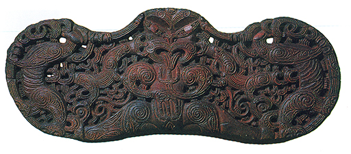
22 Dintel de la casa de un jefe maorí, inicios del siglo XIX. Madera tallada, 32 x 82 cm; Museum of Mankind, Londres.
Claro es que el hecho de que una cosa haya sido difícil de realizar no nos prueba, necesariamente, que sea una obra de arte. Si fuera así, a quienes construyen modelos de barcos de vela dentro de botellas de cristal habría que situarlos entre los más grandes artistas. Pero esta prueba de destreza nativa debiera prevenirnos contra la creencia de que sus obras parecen extraordinarias porque no han podido hacer nada mejor. No es su criterio de ejecución artística el que se aparta de los nuestros, sino la suma de sus ideas. Es importante advertir esto desde el principio, porque toda la historia del arte no es una historia del progreso de los perfeccionamientos técnicos, sino una historia del cambio de ideas y exigencias. Existe una evidencia cada vez mayor de que, bajo ciertas condiciones, los artistas primitivos pueden producir obras tan correctas en su interpretación de la naturaleza como las mejor ejecutadas por un maestro occidental. Hasta mediado este siglo no se había descubierto en Nigeria cierto número de cabezas de bronce que son las más convincentes representaciones que imaginarse pueda (ilustración 23). Parecen datar de hace muchos siglos, no existiendo ninguna razón para creer que los artistas nativos aprendieran su arte de algún extraño.
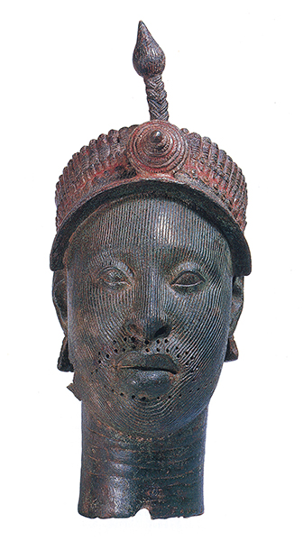
23 Cabeza de un negro: representa probablemente a un mandatario (oni) de Ife, Nigeria, siglos XII-XIV. Bronce, 36 cm de altura; Museum of Mankind, Londres.
¿Cuál puede ser, pues, la razón de que tan gran porción del arte primitivo parezca totalmente extraña? Tal vez debamos volvernos hacia nosotros mismos e intentar experimentos que todos podemos llevar a cabo. Tomemos un trozo de papel o de secante y garabateemos sobre él una cara. Tan sólo un círculo para la cabeza, un palote para la nariz, otro para la boca. Una vez hecho esto, miremos el monigote ciego. ¿No parecerá insoportablemente lastimoso? La pobre criatura no puede ver. Sentimos que debemos darle ojos, ¡y qué descanso cuando ponemos los dos puntos y, al fin, puede mirarnos! Para nosotros esto es un juego, pero para el primitivo no lo es. Un trozo de madera, con esas cuantas formas esenciales, constituye algo nuevo y distinto para él. Toma los signos que realiza como indicio de su mágico poder. No necesita hacer nada más realista toda vez que la imagen tiene ojos para mirar. La ilustración 24 muestra la imagen de un dios de la guerra polinesio llamado Oro.
24 Oro, dios de la guerra, Tahití, siglo XVIII. Madera cubierta con una red o malla, 66 cm de altura; Museum of Mankind, Londres.
Los polinesios son tallistas excelentes, pero no consideran, evidentemente, que lo esencial sea darle a esa figura la imagen correcta de un hombre. Todo lo que podemos ver en ella es un trozo de madera cubierta de fibras entretejidas. Tan sólo los ojos y los brazos están someramente indicados por un cordoncillo de fibra; pero, al fijarnos nuevamente en ellos, nos damos cuenta de que basta con ello para conferirle un aspecto de misterioso poder. No nos hallamos todavía enteramente en el reino del arte, pero nuestro experimento del monigote puede aún enseñarnos algo más. Cambiemos la forma del rostro que hemos garabateado en todas sus posibilidades. Cambiemos la forma de los ojos de puntos a cruces, o a otro trazo cualquiera que no posea ni la más remota semejanza con los ojos verdaderos. Hagamos de la nariz un círculo y de la boca una espiral. Difícilmente cambiará, en tanto que su relativa posición continúe siendo aproximadamente la misma. Ahora bien, para el artista nativo este descubrimiento significará mucho probablemente, pues le enseñará a extraer sus figuras o rostros de aquellas formas que más le gusten, y que mejor se adapten a su especial habilidad. El resultado puede que no sea muy realista, pero conservará cierta unidad y armonía de diseño que es precisamente lo que, con toda probabilidad, le faltaba a nuestro monigote. La ilustración 25 muestra una máscara de Nueva Guinea. Seguramente no es una cosa bella, pero no es eso lo que se propone ser; está destinada a una ceremonia en la que los jóvenes del poblado se disfrazan de espíritus y asustan a las mujeres y a los niños. Mas pese a lo fantástica o incluso repulsiva que pueda parecernos, hay algo convincente en el modo en que el artista ha sabido obtener este rostro a partir de unas formas geométricas.
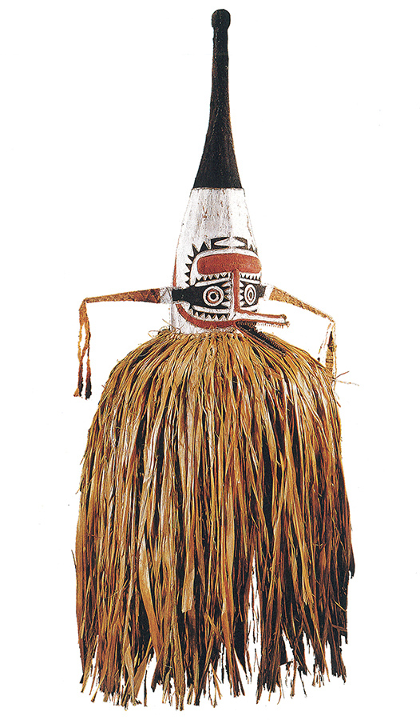
25 Máscara ritual papúa de la región del Golfo, Nueva Guinea, h. 1880. Madera, tejido de corteza y fibra vegetal, 152,4 cm de altura; Museum of Mankind, Londres.
En algunas partes del mundo, los artistas primitivos han sabido desarrollar elaborados sistemas para representar ornamentalmente las diversas figuras y tótems de sus mitos. Entre los indios de América del Norte, por ejemplo, los artistas combinan una observación muy aguda de las formas naturales con su desdén por lo que nosotros llamamos las apariencias reales de las cosas. Como cazadores, conocen la verdadera forma del pico del águila, o de las orejas del castor, mucho mejor que cualquiera de nosotros. Pero ellos consideran tales rasgos como meramente suficientes. Una máscara con un pico de águila es precisamente un águila. La ilustración 26 es un modelo de casa de un caudillo entre la tribu haida de los pieles rojas, con tres de los llamados mástiles totémicos en su fachada. Nosotros sólo podemos apreciar un revoltijo de horribles máscaras, pero para el nativo el mástil central ilustra una antigua leyenda de su tribu. La leyenda misma, para nosotros, es casi tan extraña e incoherente como su representación, pero no debe sorprendernos mucho que las ideas de los primitivos difieran de las nuestras. Hela aquí:
Hubo una vez un mozo en la ciudad de Gwais Kun que acostumbraba holgazanear, tumbado todo el día en la cama, hasta que su suegra le censuró por ello; él se sintió avergonzado, y se fue decidido a matar a un monstruo que habitaba en un lago y que se alimentaba de hombres y ballenas. Con ayuda de un pájaro sobrenatural construyó un cepo con el tronco de un árbol y suspendió encima de él a dos niños para que sirvieran de cebo. El monstruo fue capturado y el mozo se disfrazó con su piel para apresar peces, que regularmente depositaba sobre los escalones de la puerta de la casa de su suegra. Ésta se sintió tan halagada por estos inesperados dones, que llegó a creerse hechicera. Cuando el mozo, al fin, la desilusionó, se sintió tan avergonzada que murió a causa de ello.
Todos los participantes en esta tragedia se hallan representados en el mástil central. La máscara que se halla debajo de la entrada es una de las ballenas que el monstruo acostumbraba comer. La gran máscara de encima de la puerta es el monstruo; sobre ella, la forma humana de la infortunada suegra. La máscara que tiene el pico puesto sobre esta última es el pájaro que ayudó al héroe; este mismo aparece más arriba disfrazado con la piel del monstruo y con los peces apresados por él. Las figuras humanas son los niños que el héroe utilizó como cebo.
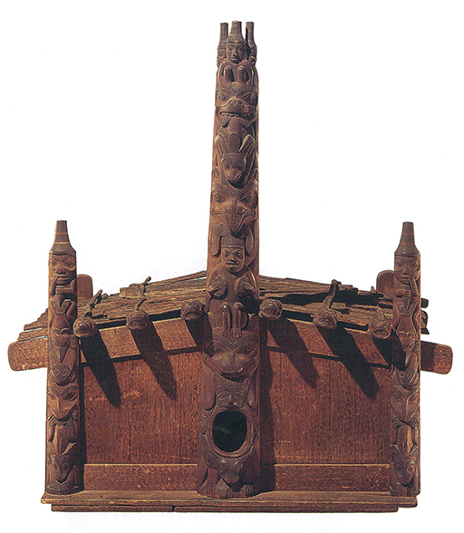
26 Modelo de la casa de un caudillo haida del siglo XIX, indios de la costa noroeste. Museo Americano de Historia Natural, Nueva York.
Una obra semejante nos parece producto de una extravagante fantasía, pero para los que la hicieron constituía una empresa solemne. Costó años labrar esos grandes mástiles, con las herramientas primitivas de que disponían los nativos y, algunas veces, toda la población masculina colaboró en la tarea. Fue para señalar y honrar la casa de un poderoso caudillo.
Sin una explicación no nos es posible comprender el objeto de esas creaciones en las que se puso tanto amor y trabajo. Así sucede frecuentemente con obras de arte primitivo. Una máscara como la de la ilustración 28 puede parecernos graciosa, pero su significado no es, ni con mucho, gracioso.
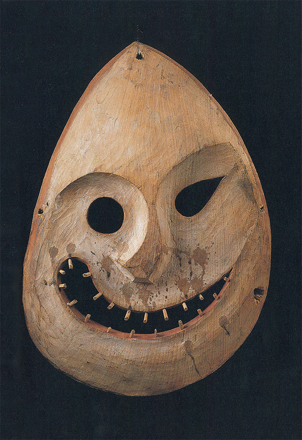
28 Máscara de danza inuit de Alaska, h. 1880. Madera pintada, 37 x 25,5 cm; Museo Etnológico, Museo Nacional, Berlín.
Representa a un demonio de las montañas devorador de hombres con la cara manchada de sangre. Pero aunque no consigamos entenderlo, podemos apreciar la fidelidad con que las formas naturales han sido traducidas a una composición coherente. Existen muchas grandes obras de esta clase que datan de los extraños comienzos del arte, y cuya exacta explicación se ha perdido probablemente para siempre, pero que podemos admirar todavía. Todo lo que nos queda de las grandes civilizaciones de la América antigua es su «arte». He puesto la palabra entre comillas, no porque a esas misteriosas construcciones e imágenes les falte belleza —algunas de ellas son sumamente fascinantes—, sino porque no debemos acercarnos a ellas con la idea de que fueron realizadas con fines placenteros o decorativos. La talla terrorífica de una cabeza de la muerte, perteneciente a un altar de las ruinas de Copán, en la actual Honduras (ilustración 27), nos recuerda los horribles sacrificios humanos exigidos por las religiones de esos pueblos. A pesar de lo poco que puede saberse acerca del sentido exacto de esas tallas, los enormes esfuerzos de los especialistas que han redescubierto esas obras, y que han tratado de penetrar en sus secretos, nos han enseñado bastante para compararlas con otras similares de las culturas primitivas. Claro está que esos pueblos no eran primitivos en el sentido usual del término.
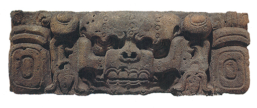
27 Cabeza del dios de la muerte, de un altar de piedra maya hallado en Copán, Honduras, h. 500-600. 37 x 104 cm; Museum of Mankind, Londres.
Cuando llegaron los conquistadores españoles y portugueses del siglo XVI, los aztecas en México y los incas en Perú y Bolivia regían poderosos imperios. Sabemos también que, en tempranos siglos, los mayas de América Central construyeron grandes ciudades y desarrollaron un sistema de escritura y de cálculo del calendario que es todo menos primitivo. Al igual que los negros de Nigeria, los americanos precolombinos eran perfectamente capaces de representar un rostro humano con aspecto natural. A los antiguos peruanos les gustaba modelar ciertas vasijas en forma de cabezas humanas de un realismo sorprendente (ilustración 29). Si la mayoría de las obras de esas civilizaciones nos parecen fantásticas y poco naturales, la razón reside probablemente en las ideas que se proponían transmitir.
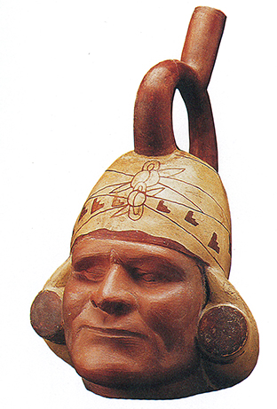
29 Vasija con la forma de un hombre tuerto, hallada en el valle de Chicanná, Perú, h. 250-550. Arcilla, 29 cm de altura; Instituto de Arte de Chicago.
La ilustración 30 reproduce una estatua mexicana que se cree data del período azteca, el último antes de la conquista. Los investigadores creen que representa al dios de la lluvia, cuyo nombre era Tláloc. En esas zonas tropicales la lluvia es con frecuencia cuestión de vida o muerte, pues sin ella las cosechas pueden fallar, dando lugar a que se perezca de hambre. Se comprende, pues, que el dios de la lluvia y las tormentas asuma en el espíritu la forma de un demonio de terrorífico poder. El rayo, en el cielo, aparece en la imaginación como una gran serpiente, y, por ello, muchos pueblos americanos han considerado a la serpiente de cascabel como un ser sagrado y poderoso. Si observamos más detenidamente la figura de Tláloc vemos, en efecto, que su boca está formada por dos cabezas de esa clase de ofidios, frente a frente, con sus grandes colmillos venenosos sobresaliendo de sus mandíbulas, y que su nariz, asimismo, parece haberse plasmado con el cuerpo retorcido de una serpiente. Tal vez hasta sus ojos puedan ser vistos como dos culebras enroscadas. Vemos así cuán lejos de nuestro criterio, acerca de la escultura, puede llevar la idea de construir un rostro extrayéndolo de formas dadas. También podemos percibir algún vislumbre de las razones que han conducido, a veces, a este método. Ciertamente, era adecuado formar la imagen del dios de la lluvia con los cuerpos de las serpientes sagradas que corporizaban la fuerza del rayo. Si consideramos la extraña mentalidad que creó esos terribles ídolos, podemos llegar a comprender cómo la realización de imágenes en esas civilizaciones primitivas no se hallaba relacionada sólo con la magia y la religión, sino que también era la primera forma de escritura. La serpiente sagrada en el arte antiguo de México no fue solamente la reproducción de la serpiente de cascabel; llegaría a evolucionar hasta constituir un signo para expresar el rayo y, de este modo, crear un carácter por medio del cual pudiera ser registrada, o tal vez conjurada, una tormenta. Sabemos muy poco acerca de esos misteriosos orígenes, pero si queremos comprender la historia del arte haremos bien en recordar, siquiera por un momento, que las artes y las letras constituyen, verdaderamente, una misma familia.
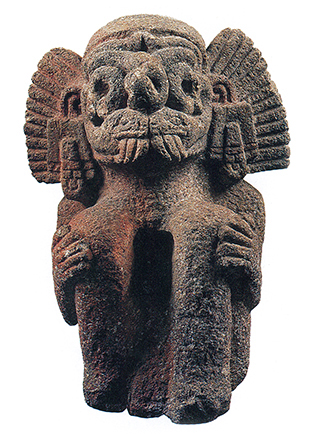
30 Tláloc, dios azteca de la lluvia, siglos XIV-XV. Piedra, 40 cm de altura; Museo Etnológico, Museo Nacional, Berlín.
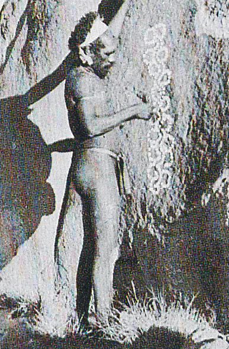
Aborigen australiano dibujando el esquema de un opossum totémico sobre una roca.